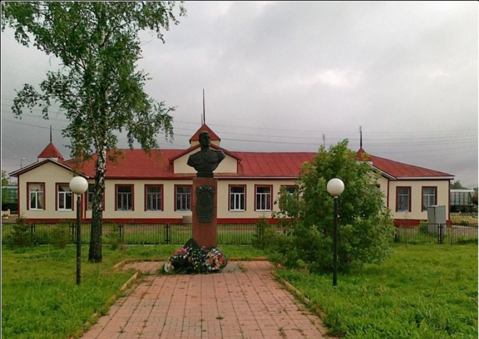
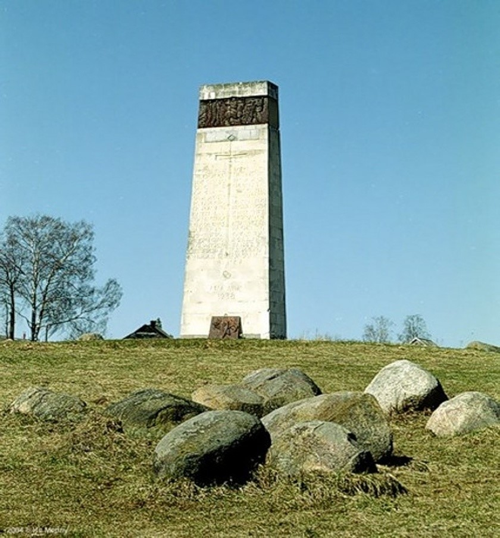
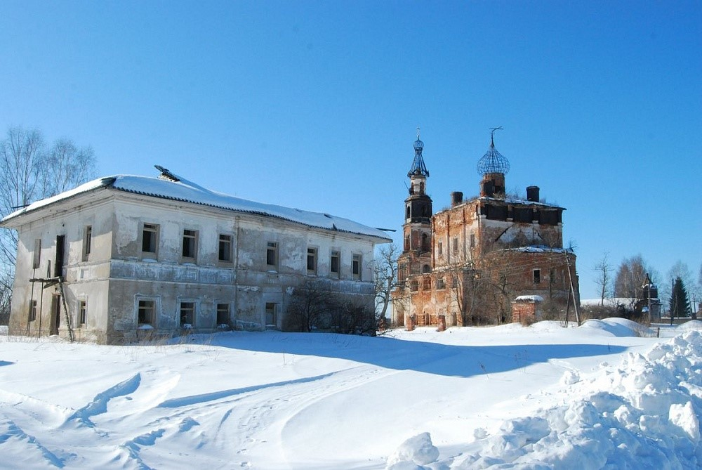
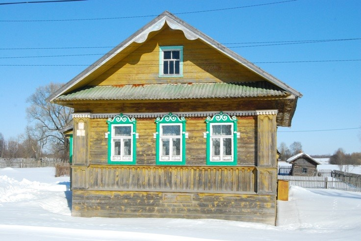
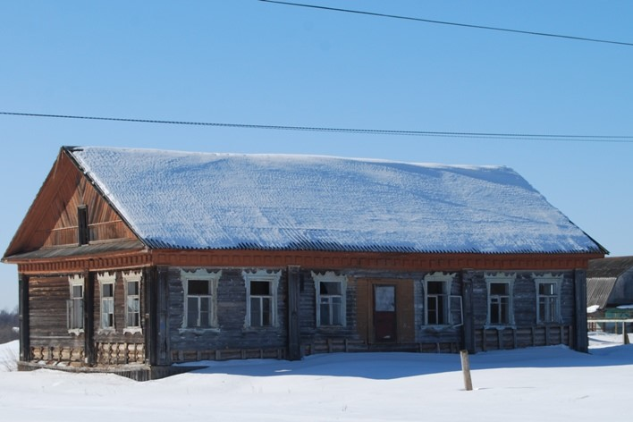
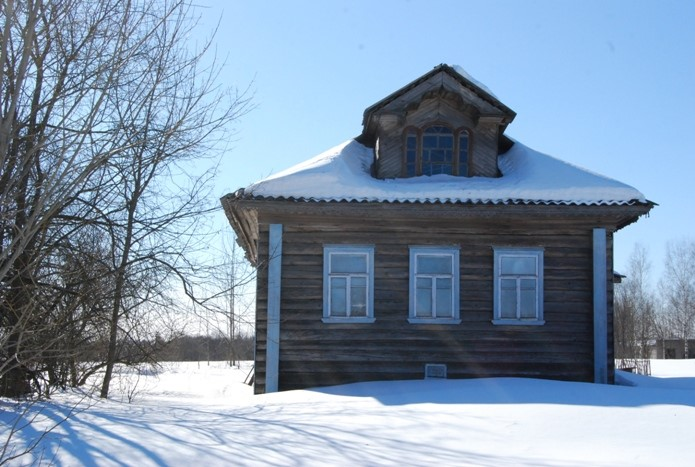
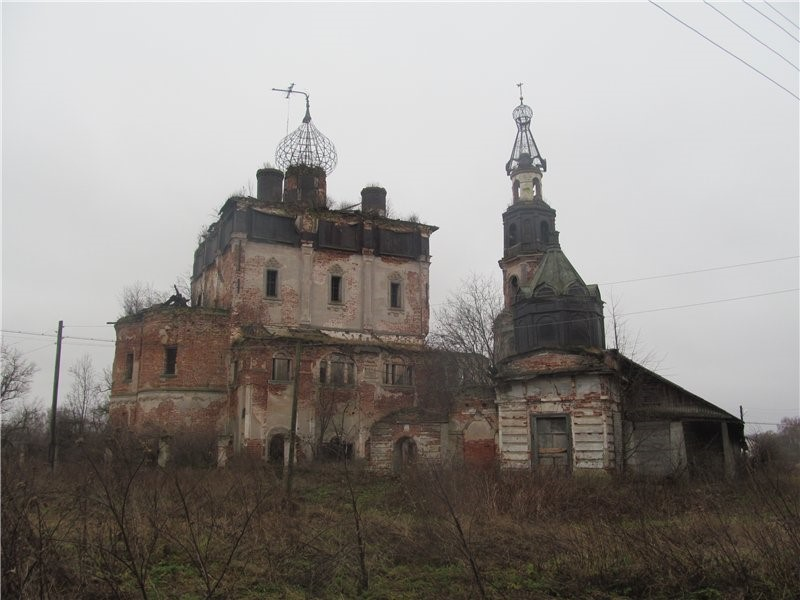

Сонково
Культура
1.Бюст Василию Ивановичу Андрианову.

Дважды Герой Советского Союза, командир звена авиационного штурмового полка Василий Иванович Андрианов за время войны совершил 177 боевых вылетов, лично уничтожил 50 танков и 200 автомашин, сбил 6 самолетов противника.
2.Стела в память о сражении на реке Сити

В 1238 году великий князь Владимирский Юрий Второй при реке Сити был разбит. «Была битва великая и сеча злая, и лилась кровь, как вода» - так говорит об этом событии летопись. Монгольский корпус под командованием Бурундая подошёл к Сити со стороны Углича. Владимирское войско не успело изготовиться к битве за исключением части войск численностью 3000 человек под руководством воеводы Дорофея Семёновича. Русское войско было окружено и почти полностью погибло или попало в плен. Князь Юрий погиб вместе с войском, его голова была отрублена и преподнесена в дар хану Батыю.
3.Село Кой. Историческая застройка (XIX-XXв).

В этом селе сохранилась старинная Троицкая церковь и ряд других церковных построек. Церковь снаружи была украшена цветными фресками из святого писания. Там построена огромная пятиярусная колокольня. Уникальный для Тверской области ансамбль застройки очень большого торгового села, который включает, помимо церквей, ряд жилых и общественных построек середины - второй половины XIX в., а также остатки усадьбы помещиков Пономаревых.
Дом бежецкого типа конца XIX века:

Дом кашинского типа:

Такие дома и определяли вид села сто лет назад.

Интересной чертой некоторых местных домов являются высокие мезонины с тройными окнами типа серлианы, устраивавшиеся, вероятно, в начале XX века по образцу таких же окон галереи Троицкого собора.
4.Александр Петрович Куницын.
В селе Кой в 1783 году родился профессор Царскосельского лицея юрист Александр Петрович Куницын. В 1811 - 1820 годах он преподавал в Царскосельском лицее нравственные и политические науки. Успех, каким он пользовался среди слушателей лицея, засвидетельствован Александром Сергеевичем Пушкиным в «Лицейской годовщине 19 октября 1825 г. «Куницыну дань сердца и вина! Он создал нас, он воспитал наш пламень, Поставлен им краеугольный камень, Им чистая лампада возжжена».
5.Кладбищенская церковь Иоанна Богослова (1833)
